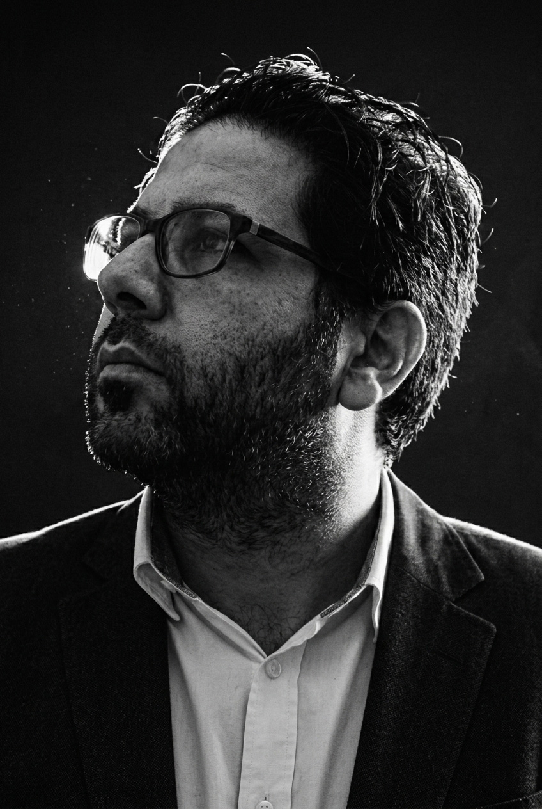
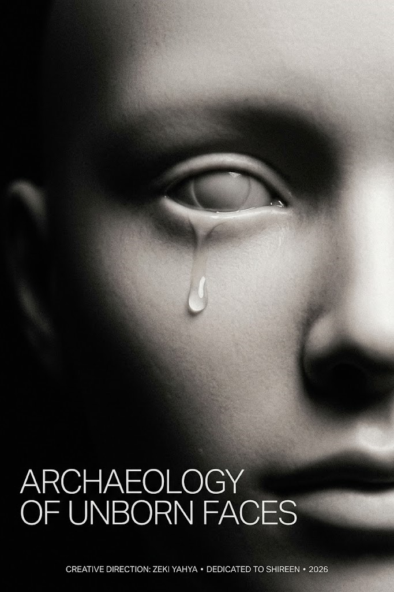
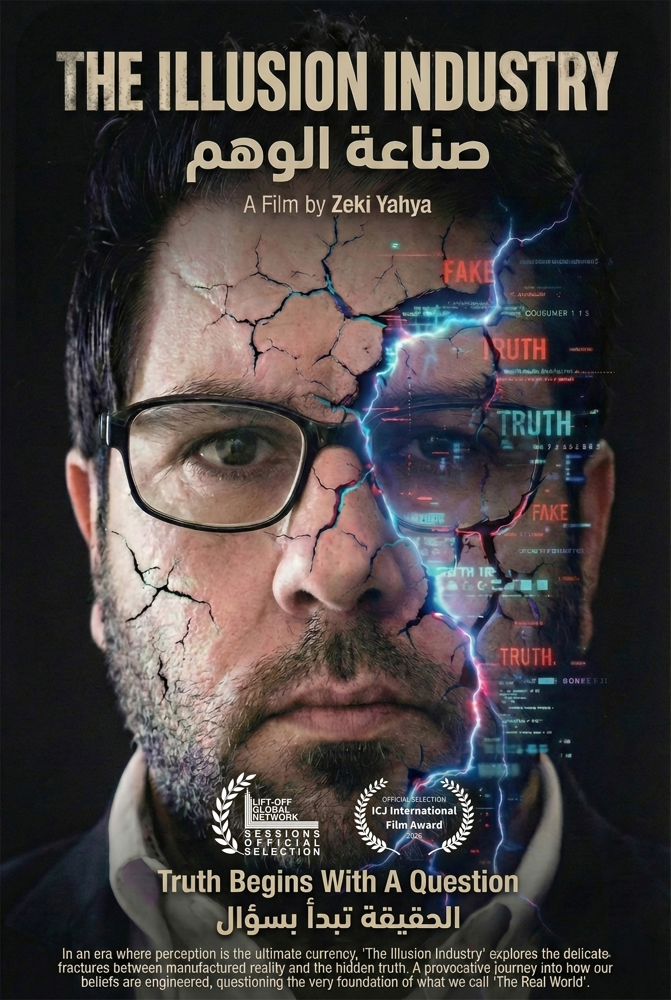
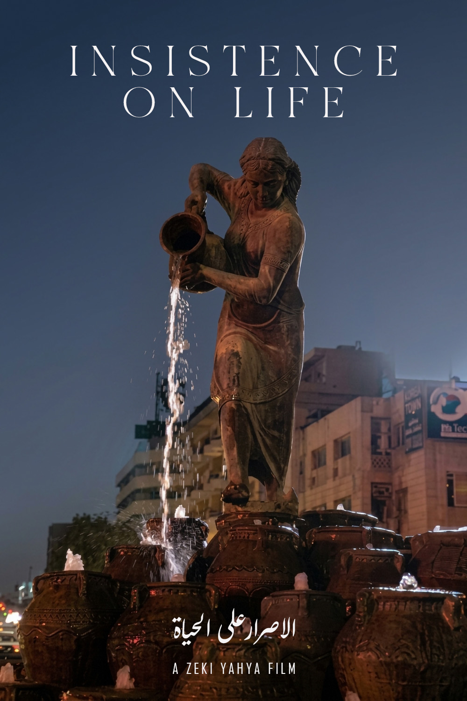

Зеки Јахја
Филмски стваралац и независни истраживач
Усредсређен на филозофски, дистопијски, експериментални и авангардни филм
Усредсређен на филозофски, дистопијски, експериментални и авангардни филм
За мене филм није само средство причања прича; он је чин духовног и филозофског ископавања. То је потрага за визуелизацијом онога што се још није испољило, за хватањем тихих борби постојања пре него што добију облик.
Моје филмско истраживање дубоко је укорењено у потрази за онтологијом истине. Црпећи из дубоке егзистенцијалне тежине Ничеове филозофије и медитативне, меланхоличне тишине Тарковскијеве традиције, платну не прилазим као сликарском платну, већ као огледалу које одсликава рушевине савремене душе.
На свом путу — од сецирања механизама стварности у „The Illusion Industry” до истраживања постиндустријског отуђења у „The Great City” — увек сам тежио померању граница визуелног израза. Данас стојимо на прагу нове границе: синтетичке слике.
Својим најновијим радом, „Archaeology of Unborn Faces”, зарањам у „латентни простор” вештачке интелигенције. Алгоритме не видим само као алате, већ као „дигитално чистилиште” у којем се сећања која никада нису постојала и идентитети који се још нису родили болно боре да се испоље. Кроз суморно, монохромно сочиво и сировом снагом немог филма настојим да изнесем на светло та нерођена лица, питајући шта значи бити човек у доба у којем машине могу сањати људску тугу.
Снимам филмове да бих забележио тихи слом и неме васкрсења људског духа. Мој рад је позив да загледамо у понор, не са страхом, већ са дубоком жељом да разумемо архитектуру сопствених илузија.



Филмска оптужница против времена. Надилазећи конвенционалну причу, пројекат оваплоћује бирократско одлагање постојања — визуелни превод кафкијанске ноћне море и Ничеовог ужаса модерне индустријске душе. Уклањањем дијалога и музичке утехе гледалац је принуђен да телесно издржи ерозију чекања, а платно постаје егзистенцијално чистилиште.
Case 0: TomorrowКликните на кадар за увећање


Дубоко филмско ископавање „латентног простора” вештачке интелигенције. Изван критике дигиталне обмане, пројекат истражује онтологију самог синтетичког постојања. Прихватајући Тарковскијеву филозофију вајања времена, мучно спори кадрови и тешка тишина терају гледаоца да издржи физичку тежину времена у машини која не разуме смртност. Беспрекорна лица која се појављују нису одрази стварности, већ Бодријарова „хиперреалност” која скрива одсуство порекла.
Archaeology of Unborn FacesКликните на кадар за увећање


Надахнут филозофским ремек-делом Фридриха Ничеа „Тако је говорио Заратустра”, овај авангардни пројекат делује као суморно филмско огледало савремене метрополе. Визуелно сецира језиво пророчанство „Последњег човека” — крајње испољавање духовног нихилизма и културног пропадања у модерној гомили. Кроз бескомпромисно експериментално сочиво филм скида романтику урбаног напретка како би открио празну суштину друштва заробљеног у механичком понављању.
The Great CityКликните на кадар за увећање

Интензивна филмска критика хиперреалности и дигиталне обмане. Пројекат истражује замагљене границе између аутентичног људског постојања и симулираних стварности, преиспитујући измишљене наративе који владају нашом визуелном културом. Ослобођен површних филмских конвенција, филм изазива гледаоца да сецира онтологију слике и систематску производњу илузије у модерном свету.
The Illusion IndustryКликните на кадар за увећање


Контемплативно визуелно путовање у дубине самоће и свакодневне рутине, у којем се „слика” претвара из обичног предмета у огледало људске борбе између жеље за припадањем и горчине отуђења. „Painting” је филмско искуство које истражује удаљеност између себе и другог.
PaintingКликните на кадар за увећање


Широко визуелно путовање, испуњено духом отпорности и вољом за животом у ирачком главном граду Багдаду. Далеко од познатих клишеа, филм продире у људску и културну дубину града, приказујући живе детаље багдадских улица, ток свакодневног живота, бистрину Тигра и његове осветљене мостове, у складу са пулсом породица и младих који стварају радост усред тешкоћа. То је филмска и уметничка документација трајне страсти према животу.
Insistence on LifeКликните на кадар за увећање

Испражњено од света око себе, а преплављено једном опседајућом присутношћу, око види једну вољену фигуру одражену свуда куда се окрене.


Филм о одсуству и губитку који истражује тежину невидљивог и постојано присуство онога што је остало. Дело промишља геометрију празнине и просторно отуђење, без конвенционалне приче или дијалога, остављајући чисте визуелне трагове као сведочанство протока времена.
GoneКликните на кадар за увећање

Посматрачки теренски документарац снимљен у Багдаду и Наџафу током грађанског покрета 14. фебруара 2014. Директним визуелним урањањем и спонтаним дијалозима уживо филм бележи нефилтриране гласове, расправе и људске интеракције грађана у јавном простору, нудећи живо, непосредно сведочанство изражавања одоздо.
The Pending EchoКликните на кадар за увећање
Овај чланак анализира експериментално веб уметничко дело: сумерско издање сајта једног филмског ствараоца, које људским посетиоцима приказује Unicode клинасте знаке, а у ознакама декларише језички код sux (ISO 639-3). Методама заснованим на пракси, преузетим из критичких студија кода и медијске археологије, студија дели страницу на видљиву клинасту површину и машински читљиву подлогу...
Читајте на PhilPapers ↗Овај рад доноси семиотичко и филозофско преиспитивање филма There Will Be Blood (2007) Пола Томаса Андерсона, које превазилази класичну дихотомију религије и капитализма да би разоткрило дубљу структурну симбиозу моћи. Користећи „Друштво спектакла“ Ги Дебора и појам „послушних тела“ Мишела Фукоа, истраживање деконструише...
Читајте на PhilPapers ↗Критичка рецепција филма Heat (1995) Мајкла Мана организовала се око два оквира: моралне дихотомије закона и злочина и егзистенцијалне романсе два огледална професионалца. Оба индивидуализују оно што филм упорно структурише. Овај рад тврди да је Heat студија о неједнакој расподели ликвидности...
Овај рад истражује појаву интелектуалне зависности као губитка критичке аутономије услед спољашњих утицаја попут масовних медија и социјализације. Испитује како то води ерозији личног идентитета и друштвеној стагнацији, наглашавајући нужност критичког мишљења и аналитичког образовања као кључних алата интелектуалног ослобођења и изградње независне свести.
Читајте на Zenodo ↗Филмски и филозофски манифест који истражује „Меланхолични реализам” као субверзивну визуелну методологију у доба синтетичког и дигиталног филма. Повлачећи дубоке феноменолошке паралеле са ремек-делом Андреја Тарковског из 1983, Nostalghia, рад испитује употребу физичког трења, пропадања окружења и мучног трајања као оружја против савремене хиперреалне савршености...
Читајте на PhilPapers ↗Рад испитује епистемолошку кризу дигиталног доба тврдећи да савремени медијски апарат контролише друштво не потискивањем истине, већ масовном производњом хиперперсонализованих алгоритамских илузија. Користећи филм Shutter Island (2010) Мартина Скорсезеа као централну метафору, есеј повлачи паралелу са урањајућом, конструисаном стварношћу болнице Ashecliffe...
Читајте на PhilPapers ↗Истраживање обрађује феномен лажних вести као опасно испољавање дезинформације у савременом дигиталном окружењу, које делује као свесна индустрија илузије заснована на сложеној интеракцији дигиталних алгоритама и људских психолошких предрасуда. Ослањајући се на дескриптивно-аналитички приступ и семиотичку анализу...
Читајте на Zenodo ↗За селекторе фестивала, кустосе, истраживаче и штампу.